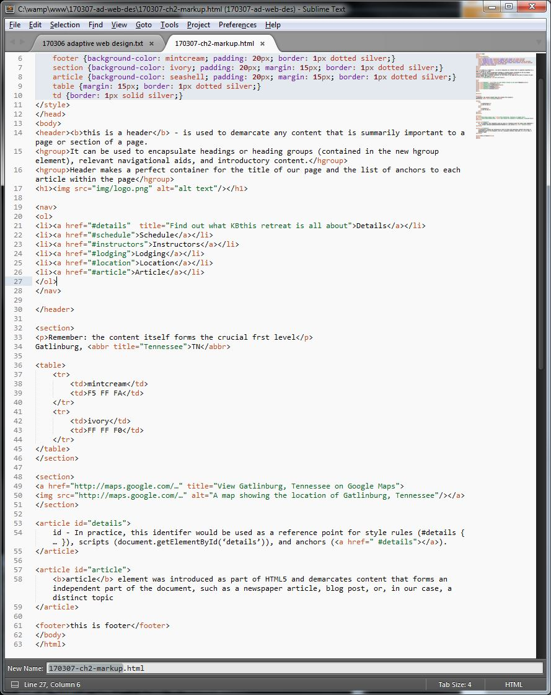

this is a header - is used to demarcate any content that is summarily important to a page or section of a page.
It can be used to encapsulate headings or heading groups (contained in the new hgroup element), relevant navigational aids, and introductory content.
Header makes a perfect container for the title of our page and the list of anchors to each article within the page
Remember: the content itself forms the crucial frst level
Gatlinburg, TN
mintcream
F5 FF FA
ivory
FF FF F0
id - In practice, this identifer would be used as a reference point for style rules (#details { … }), scripts (document.getElementById(‘details’)), and anchors ().
article element was introduced as part of HTML5 and demarcates content that forms an independent part of the document, such as a newspaper article, blog post, or, in our case, a distinct topic
